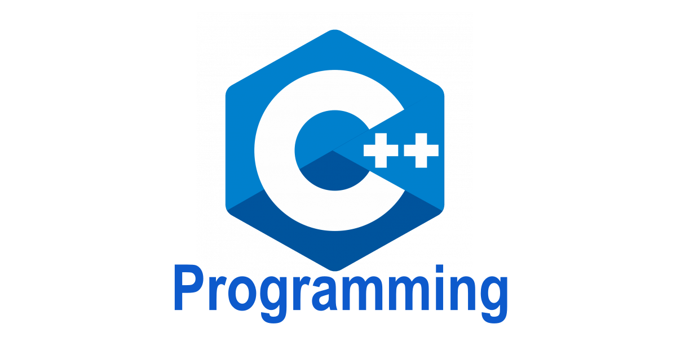

Popular Programming Languages
As of 2025, some of the most popular programming languages include Python, JavaScript, SQL, Java, C++, and C#. Python remains a top choice because of its simplicity and versatility, especially in fields like data science, machine learning, and automation. JavaScript continues to dominate in web development, while SQL is essential for working with databases. Java, C++, and C# are still heavily used in enterprise software, mobile development, and game programming due to their performance and scalability.
